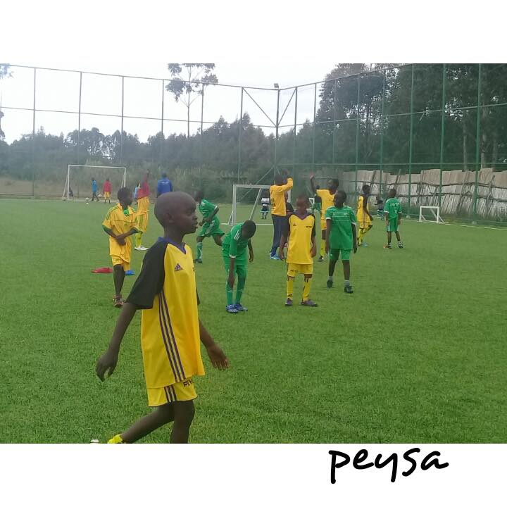

Our Gallery

We will be having a series of soccer clinics over the next few months. These will be one day events geared to provide an opportunity for kids that are currently not enrolled in organized sports to come come have fun and develop interest in soccer as we teach a few footballing and life skills. The first of such events will be this coming weekend.

Just concluded Donate Sport 7 Aside Invitational tournament. The tournament was a success with teams from all over kenya. We can achieve a lot when we pull together as a community. Thank you Musa Otieno for sharing the pics. We are proud to be associated with your organisation. We appreciate the work you are doing for youth soccer.